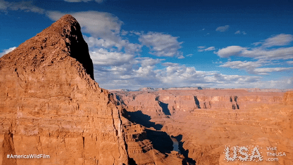
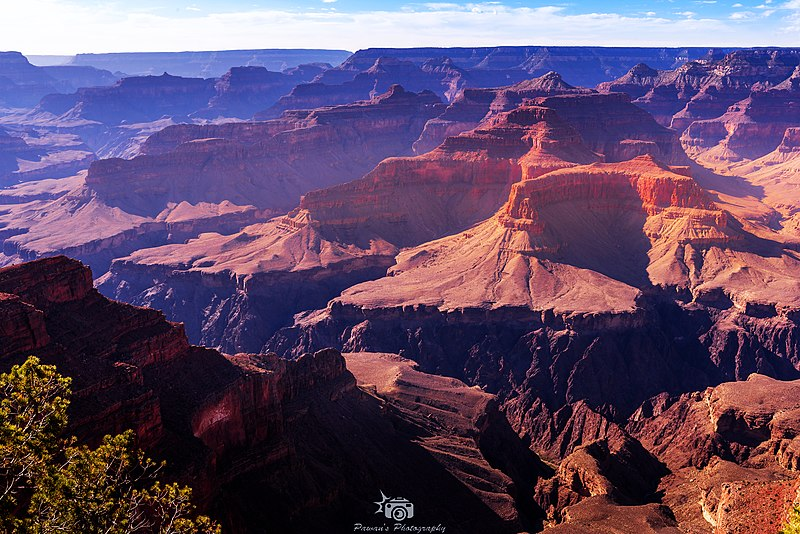
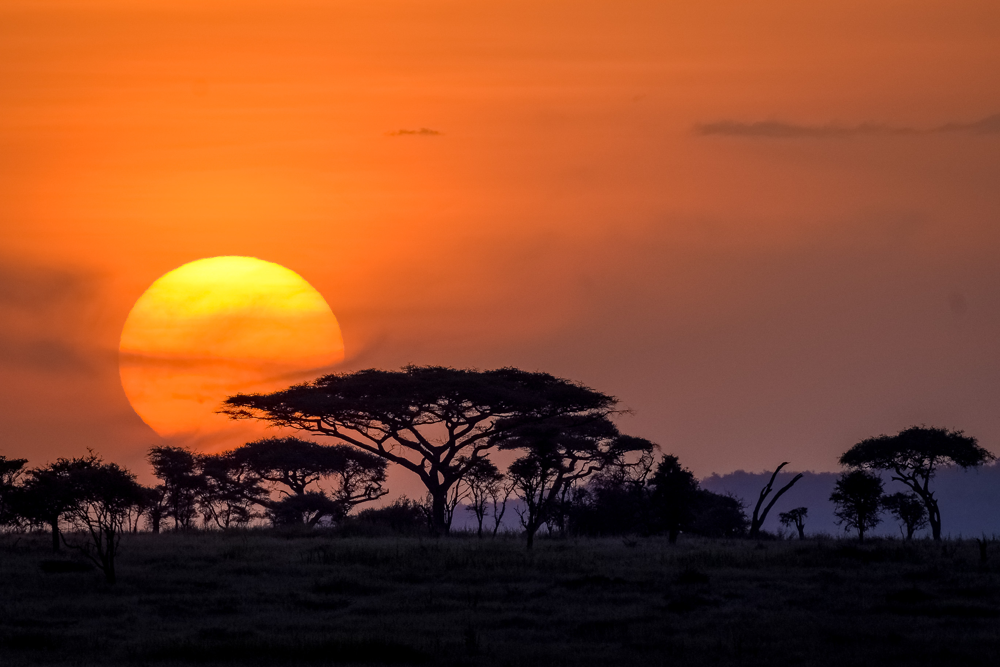

Destination: Grand Canyon
 The Grand Canyon, a geological wonder located in the state of Arizona, USA, stands as one of the world's most awe-inspiring natural landscapes. Carved over millions of years by the relentless forces of the Colorado River, the Grand Canyon is a testament to the Earth's intricate geological history. Stretching approximately 277 miles (446 kilometers) long, up to 18 miles (29 kilometers) wide, and with depths reaching over a mile (1.6 kilometers), the canyon offers a breathtaking display of layered rock formations, each stratum representing a chapter in the planet's geological narrative.
The canyon's mesmerizing palette of colors, ranging from deep reds to soft yellows, changes dynamically with the shifting sunlight, creating a visual spectacle that captivates visitors. Beyond its stunning visual appeal, the Grand Canyon is a haven for biodiversity, hosting a diverse array of plant and animal life. The South Rim, a popular entry point for visitors, provides panoramic vistas and numerous hiking trails, while the North Rim offers a more secluded experience. Whether exploring its rim, embarking on a river rafting adventure, or simply standing at its precipice in quiet contemplation, the Grand Canyon is a testament to the sheer power and beauty of nature, inviting all who encounter it to marvel at its grandeur.
Destination: Great Barrier Reef

The Great Barrier Reef, located off the coast of Queensland, Australia, is the world's largest coral reef system and one of the seven wonders of the natural world. This massive marine structure, composed of over 2,900 individual reefs and 900 islands, stretches over 2,300 kilometers (1,400 miles) along the Australian coastline. The reef is renowned for its spectacular biodiversity, including a dazzling array of coral, hundreds of species of fish, whales, dolphins, and sea turtles.
The vibrant colors and the diverse marine life of the Great Barrier Reef create an underwater paradise for snorkelers and divers, offering a once-in-a-lifetime experience. Above the water, the reef presents breathtaking views, especially from the air, revealing a kaleidoscope of blue and green hues. The reef is not only a haven for marine biologists and nature enthusiasts but also a vital part of the ecosystem and an important barometer of the health of our planet. Visitors to the Great Barrier Reef can engage in various activities such as diving, snorkeling, sailing, and helicopter tours, each providing a unique perspective of this natural wonder.
Destination: Machu Picchu

Machu Picchu, an ancient Incan city set high in the Andes Mountains in Peru, is one of the most iconic and mystical archaeological sites in the world. Built in the 15th century and later abandoned, it’s renowned for its sophisticated dry-stone walls that fuse huge blocks without the use of mortar, intriguing buildings that play on astronomical alignments, and panoramic views. Its exact former use remains a mystery, adding to the allure of the site.
The site is set above the Urubamba River valley, offering a breathtaking backdrop of steep, lush, and often cloud-shrouded mountains. Exploring Machu Picchu is like stepping into another world, where every corner tells a story of history, architecture, and the Incan civilization. The journey to Machu Picchu itself is an adventure, involving either a scenic train ride or an exhilarating hike along the Inca Trail. Visiting Machu Picchu is not just a journey through space, but also through time, offering a unique glimpse into the lives of the Incas and the enduring legacy they left behind.
Destination: Venice

Venice, known as the "City of Canals," is an architectural masterpiece floating upon the lagoon waters in northeastern Italy. Renowned for its beautiful waterways and rich history, Venice offers an enchanting experience unlike any other city in the world. The city's network of canals serves as its streets, with gondolas and water taxis providing the primary means of transport.
Top Attractions
- Piazza San Marco and St. Mark's Basilica
- The Grand Canal and Rialto Bridge
- Doge's Palace
- Gallerie dell'Accademia
- La Fenice Opera House
Cuisine Highlights
Venice is not just a feast for the eyes but also for the palate, offering exquisite Italian cuisine and wines.
Destination: Serengeti National Park
Serengeti National Park, located in Tanzania, is a world-renowned wildlife refuge and a haven for safari enthusiasts. It spans over 14,763 square kilometers and hosts one of the most spectacular events in the animal kingdom - the annual migration of millions of wildebeest, zebras, and gazelles in search of fresh grazing pastures.
Wildlife and Natural Beauty
- The Great Migration of wildebeest and zebras
- Home to the "Big Five" (lion, elephant, buffalo, leopard, and rhinoceros)
- Varied landscapes: savannah, woodlands, and riverine forests
- Kopjes: rocky outcrops for wildlife viewing
Activities
- Guided wildlife safaris
- Birdwatching expeditions
- Hot air balloon rides over the plains
- Walking safaris and cultural tours
Beyond wildlife, the Serengeti is also a place of immense natural beauty and geological significance, with the vast and seemingly endless plains creating a sense of tranquility and awe. It's an ideal destination for those looking to connect with nature and experience the raw and unfiltered beauty of the African wilderness.